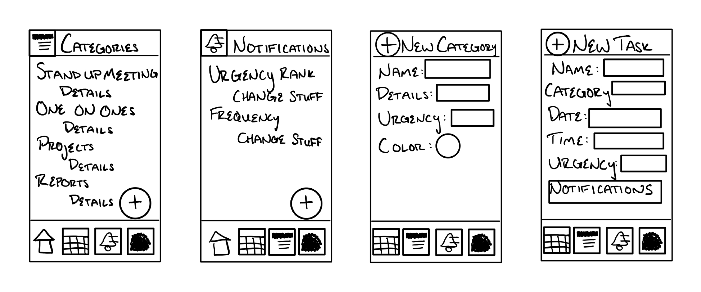
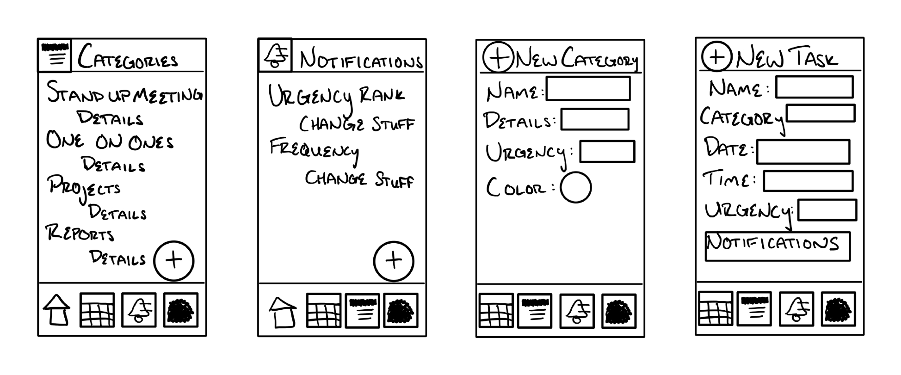
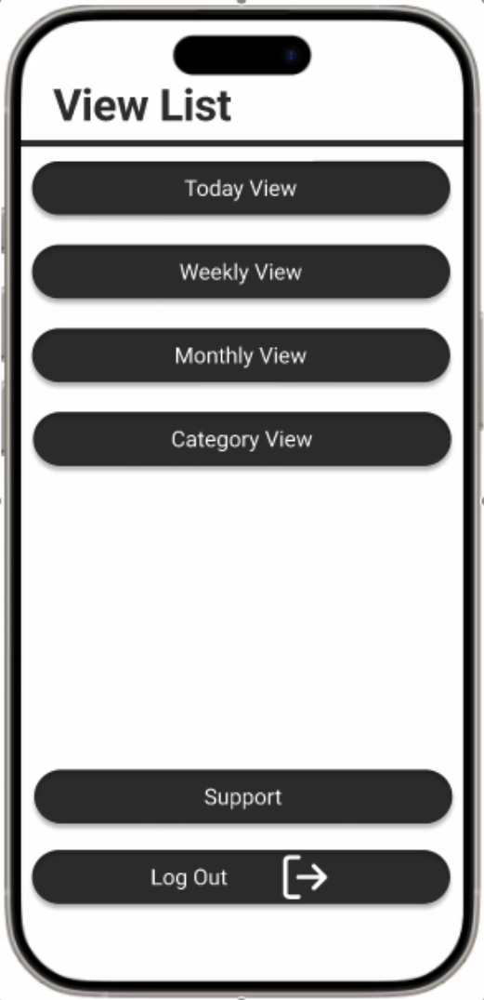
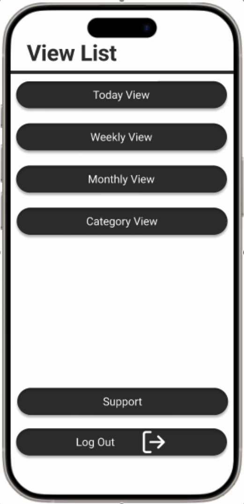
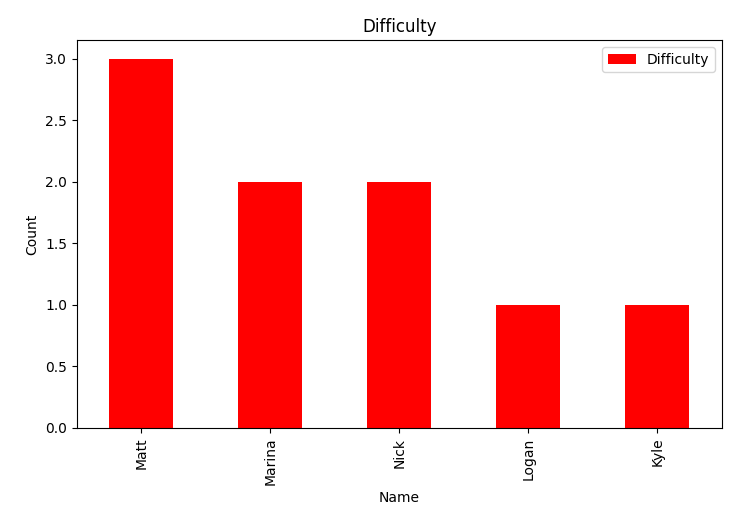
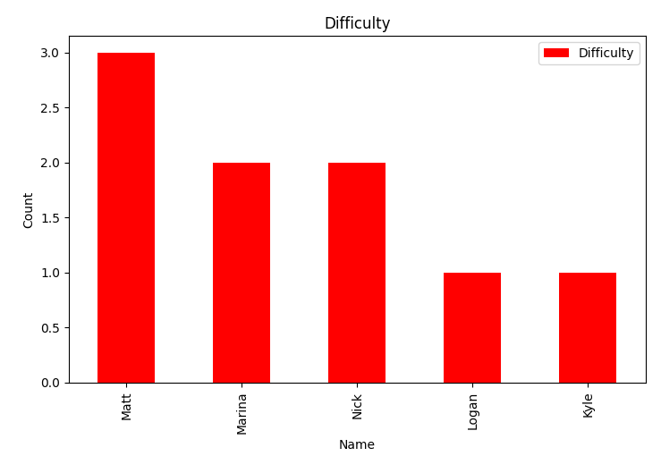

This project was created with a focus on addressing a real-world problem, prioritizing user experience and interaction at every stage. I chose to design a prototype for a task-tracking app, with the goal of making it significantly simpler and more user-friendly than existing alternatives.
This project was organized into several stages, each completed within 2-3 weeks. The first two stages centered on understanding our target user, while the third and fourth stages focused on developing the product with that user in mind, ensuring a seamless experience with high usability and meaningful interactions.
This page contains an overview of the project. The is availalbe in its entirety by following the link below, and was created using Adobe Express, and Figma, with a final presentation uploaded to YouTube.
return (UX / UI Project);
I began by crafting a clear problem statement and researching the demographics most likely to use this application, then developed a survey process. The survey aimed to understand how real-world users interact with similar apps, exploring their preferences, dislikes, and ideas for improvement. Five participants were interviewed, and from these insights, I created empathy maps for each individual, gaining a deeper understanding of their needs and perspectives.
These empathy maps were created using Google Drawings.
I developed a user persona to represent the typical user of my application, along with a comprehensive business model to support its implementation and growth.
The buisness model and persona were created using Google Drawings.
I developed a mind map for my application, centered on the key priorities identified for users in the empathy maps from stage one.
The mind map was created using the Apple Freeform app.
I began by creating several low-fidelity prototype sketches, concentrating on the features most important to users. From there, I developed a high-fidelity prototype in Figma, refining and building upon the initial concepts from the low-fidelity prototypes.
The low fidelity prototypes were created using the Apple Freeform app, while the high fidelity prototypes were created using Figma, and are available to view following the link below.
return (High Fidelity Figma Prototype);

 

 

This stage required me to test the usability and user experience of my high-fidelity prototype. I started by creating a usability test dashboard outlining the process. This dashboard contained all of the information necessary to conduct the tests. I decided to test the same subjects from stage 1 of this project, as the entire system was developed around a persona generated from the subjects input. I tested the users on what I felt would be the most common use cases of the system:
As each subject completed the required tasks, I measured the number of system errors, user inputs, and system failers. The survey ended by asking the subjects various questions about their experience.
I used a python program to input all collected data into a csv file, and then used other python programs to generate graphs based off of that data.
Based off of the data collected, I made various recommendations for the project moving foward such as fixing commonly encountered bugs, and creating a touch screen prototype to try fix touch target issues.
return (GitHub repositiory);
 

In this stage, I developed a comprehensive presentation that outlined every phase of the project. I detailed my UX research and design thinking process, covering key stages such as user research, ideation, prototyping, and testing. Each decision was backed by user data, feedback, and established UX principles. The presentation highlighted how the project effectively addressed a relevant user problem, providing a feasible and impactful solution. By showcasing prototypes and case examples, I demonstrated that the desired outcomes were successfully achieved.
return (Presentation Video);